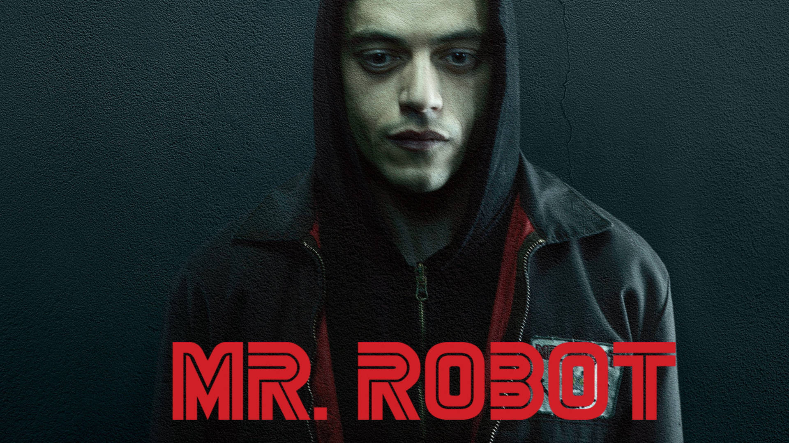

Estudio computación y me gusta la programación web, así que mis referentes no son solo personas o personajes: son formas de pensar la tecnología. Por un lado está Steve Jobs, el empresario que convirtió el diseño y la simplicidad en el corazón de la industria informática. Por otro está Mr. Robot, la serie que llevó el mundo del hacking y la ciberseguridad a la pantalla con un realismo poco común en la ficción.
Steve Jobs y la revolución de Apple
Steve Jobs cofundó Apple en 1976 junto a Steve Wozniak, en un garaje, con la idea de llevar la computadora personal a cualquier hogar. Años después, tras ser apartado de la empresa que él mismo ayudó a construir, regresó en 1997 y la llevó a convertirse en una de las compañías más valiosas del mundo, gracias a productos que cambiaron por completo la manera en la que usamos la tecnología todos los días.
Algunos hitos de su carrera
- Apple I y Apple II, las primeras computadoras personales de la empresa.
- La Macintosh, pionera en popularizar la interfaz gráfica de usuario.
- NeXT, la compañía que fundó tras salir de Apple en 1985.
- Pixar, que bajo su dirección produjo largometrajes de animación reconocidos mundialmente.
- El iPhone, presentado en 2007, que redefinió la telefonía móvil.
Mr. Robot: ficción con alma de hacker real

Mr. Robot es una serie creada por Sam Esmail que sigue a Elliot Alderson, un ingeniero de ciberseguridad que también trabaja como hacker justiciero junto a un grupo llamado fsociety. Lo que distingue a la serie es el cuidado técnico: los comandos, las herramientas y los ataques que aparecen en pantalla están basados en prácticas reales de seguridad informática, algo poco común en producciones sobre este tema.
Elementos que la hacen destacar
- El uso de herramientas y comandos de hacking reales y verificables.
- La profundidad psicológica del protagonista y su forma de narrar la historia.
- Una fotografía y dirección de arte muy particulares, con encuadres descentrados.
- Un diseño de sonido que refuerza la sensación de aislamiento del personaje principal.
- Una crítica constante al poder de las grandes corporaciones tecnológicas y financieras.
Por qué me inspiran
De Steve Jobs me quedo con su obsesión por el detalle y con la idea de que la tecnología debe sentirse simple aunque por dentro sea muy compleja, algo que trato de aplicar cuando diseño sitios web. De Mr. Robot me atrae el lado más técnico: entender cómo funciona realmente un sistema, no solo usarlo, y eso es parte de lo que me motiva a seguir aprendiendo sobre seguridad informática mientras avanzo en mi carrera.